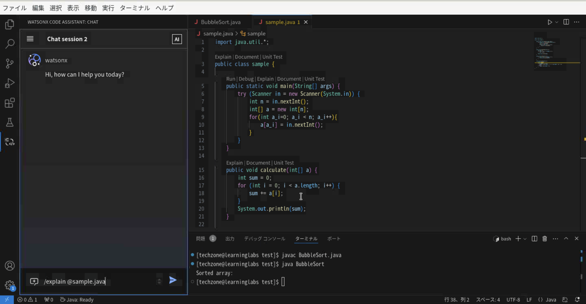
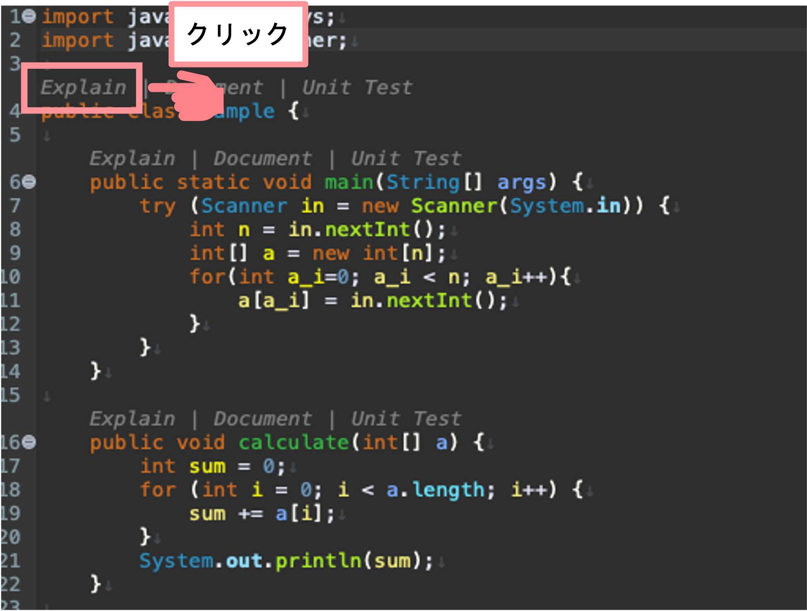
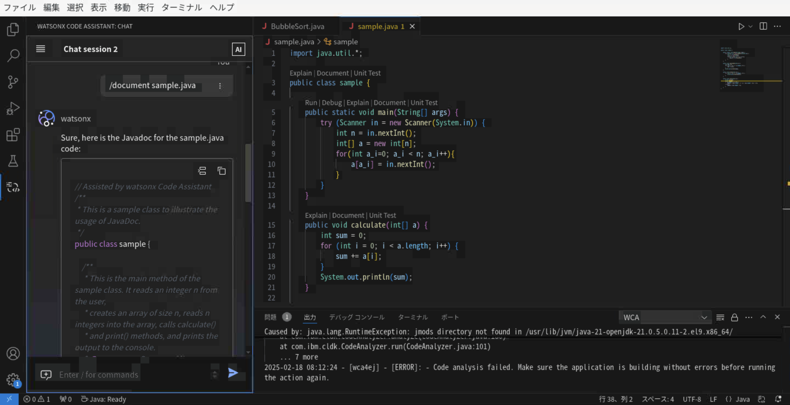
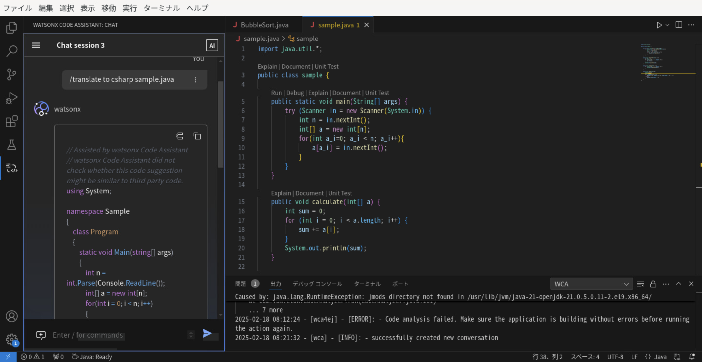
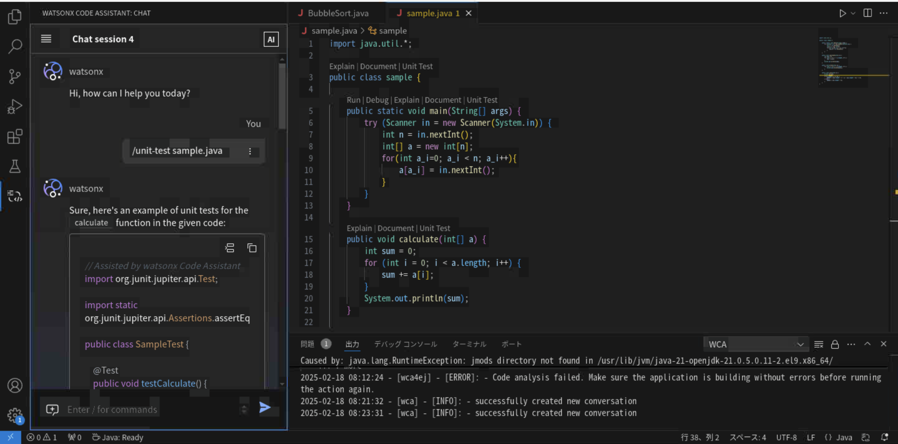

Lab2: コマンドを使用した種々の機能
このページでは、Lab2を完了するための手順を順を追って説明しております。
Lab2 の範囲:
- チャット画面でのコマンド入力による、コードの説明、ドキュメント追加、UT生成など
注意点
- 生成 AI の特性上、コード提案生成にはバリエーションが含まれる場合があり、これは、生成される提案コードは毎回完全に同一ではない可能性があることを指しております。
- チャットは会話の履歴をコンテキストとして受け取ります。そのため、メリットとしては、フォローアップの質問ができるという点が挙げられます。しかし、プロンプトの出力にも影響を与える可能性があります。そのため、出力が望ましくない場合は、チャットセッションを新規に作成してください。以下のボタンを使用します:

ヒント
- 新しいチャットセッションを開始すると、明確な文脈が得られ、より良い結果につながります。
- 使用していないチャットセッションを削除することで整理できます。
- 簡単な指示でコード提案は生成されるため、シンプルな指示であることが望ましいです。
1. コードを説明する
チャット画面で、/explainコマンドを使用すると、アクティブなワークスペースで参照されているクラス・ファイル・関数・メソッドの単位でコードを説明することができます。
次の構文を利用します。
<code reference> に対して、@シンボルを入力すると、ワークスペースのクラス、ファイル、関数、メソッドのリストが表示されます。
一度に1つのクラス、ファイル、関数、メソッド参照を使用することができます。
チャット画面を開き、以下のコマンドを入力します。

実行例は以下の通りです。
This code is a simple implementation of a program that takes an array of integers as input, calculates the sum of the array, prints the elements of the array, sorts the array in ascending order, and then prints the median of the sorted array.
The code uses the Scanner class to read input from the standard input stream and parse it into integers. It then creates a new Sample object and calls the sum(), print(), and sort() methods to perform the desired operations on the array.
The sum() method iterates through the array and adds up all the elements, storing the result in a variable named sum. It then prints the value of sum to the standard output stream.
The print() method also iterates through the array and prints each element on a new line.
The sort() method sorts the array in ascending order using the Arrays.sort() method. Once the array is sorted, the median is calculated using a conditional statement. If the length of the array is even, the median is calculated as the average of the two middle elements. If the length of the array is odd, the median is simply the middle element. Finally, the median is printed to the standard output stream.
Overall, this code demonstrates a basic implementation of a program that works with arrays of integers. It is a simple yet effective way to perform basic array operations, such as summing, printing, and sorting.
また、コードの編集画面から直接コードの解説を AI に依頼することができます。
ソースコード( sample.java )を開いて、Explain | Docment | Unit Test というコマンドを確認します。
class の上のExplainをクリックします。

2. ドキュメント作成
コードの内容から、何を行なっているかを文書化するコメント行を追加するコマンドを使用できます。
Javaでは、javadoc形式に従ったコメントが生成されます。
次の構文を利用します。
<code reference> に対して、@シンボルを入力すると、ワークスペースのクラス、ファイル、関数、メソッドのリストが表示されます。
一度に1つのクラス、ファイル、関数、メソッド参照を使用することができます。
チャット画面を開き、以下のコマンドを入力します。

実行例は以下のとおりです。
// Assisted by watsonx Code Assistant
/**
* This class contains a sample program that reads an array of integers from the standard input,
* calculates the sum of the array, prints the array, sorts the array, and prints the median value.
*/
public class Sample {
/**
* This method reads an array of integers from the standard input, calculates the sum of the array,
* and prints the sum to the standard output.
* @param a an array of integers
*/
public void sum(int[] a) {
int sum = 0;
for (int i = 0; i < a.length; i++) {
sum += a[i];
}
System.out.println(sum);
}
/**
* This method reads an array of integers from the standard input and prints the array to the standard output.
* @param a an array of integers
*/
public void print(int[] a) {
for (int i = 0; i < a.length; i++) {
System.out.println(a[i]);
}
}
/**
* This method sorts an array of integers, calculates the median value, and prints the median value to the standard output.
* @param a an array of integers
*/
public void sort(int[] a) {
Arrays.sort(a);
double median;
if (a.length % 2 == 0) {
median = (a[a.length / 2 - 1] + a[a.length / 2]) / 2.0;
} else {
median = a[a.length / 2];
}
System.out.println(median);
}
}
3. コード翻訳
ある言語から異なる言語へのコード翻訳をコマンドで行うことができます。
次の構文を利用します。
/translate [from <source_language>] to <target_language> (<code reference> | <code snippet>) [additional instructions]
<code reference> に対して、@シンボルを入力すると、ワークスペースのクラス、ファイル、関数、メソッドのリストが表示されます。
一度に1つのクラス、ファイル、関数、メソッド参照を使用することができます。
TypeScript、Java ScriptではJavaScript ように、スペースを入れずに完全な言語名を指定する必要があります。
チャット画面を開き、以下のコマンドを入力します。

実行例は以下のとおりです。
// Assisted by watsonx Code Assistant
// watsonx Code Assistant did not check whether this code suggestion might be similar to third party code.
using System;
using System.Linq;
public class Sample
{
public static void Main(string[] args)
{
Console.WriteLine("Enter the number of elements: ");
int n = Convert.ToInt32(Console.ReadLine());
int[] a = new int[n];
for (int i = 0; i < n; i++)
{
Console.WriteLine("Enter element " + (i + 1) + ": ");
a[i] = Convert.ToInt32(Console.ReadLine());
}
Sample s = new Sample();
s.Sum(a);
s.Print(a);
s.Sort(a);
}
public void Sum(int[] a)
{
int sum = 0;
foreach (int i in a)
{
sum += i;
}
Console.WriteLine("Sum: " + sum);
}
public void Print(int[] a)
{
foreach (int i in a)
{
Console.WriteLine(i);
}
}
public void Sort(int[] a)
{
Array.Sort(a);
double median;
if (a.Length % 2 == 0)
{
median = (a[a.Length / 2 - 1] + a[a.Length / 2]) / 2.0;
}
else
{
median = a[a.Length / 2];
}
Console.WriteLine("Median: " + median);
}
}
4. テストケースの生成
チャット、エディタ、またはコマンドから様々なプログラミング言語の単体テストを生成できます。
チャット画面で /unit-test コマンドを使用すると、アクティブなワークスペースで参照されているクラス、ファイル、関数、メソッドのテストを生成することができます。
<code reference> に対して、@シンボルを入力すると、ワークスペースのクラス、ファイル、関数、メソッドのリストが表示されます。
一度に1つのクラス、ファイル、関数、メソッド参照を使用することができます。
次の構文を利用します。
<code reference> に対して、@シンボルを入力すると、ワークスペースのクラス、ファイル、関数、メソッドのリストが表示されます。
一度に1つのクラス、ファイル、関数、メソッド参照を使用することができます。
チャット画面を開き、以下のコマンドを入力します。

実行例は以下のとおりです。
// Assisted by watsonx Code Assistant
import org.junit.jupiter.api.Test;
import static org.junit.jupiter.api.Assertions.assertEquals;
public class SampleTest {
@Test
public void testSum() {
int[] a = {1, 2, 3, 4, 5};
Sample s = new Sample();
int sum = s.sum(a);
assertEquals(15, sum);
}
}
// Assisted by watsonx Code Assistant
import org.junit.jupiter.api.Test;
import java.io.ByteArrayOutputStream;
import java.io.PrintStream;
import static org.junit.jupiter.api.Assertions.assertEquals;
public class SampleTest {
@Test
public void testPrint() {
int[] a = {1, 2, 3, 4, 5};
Sample s = new Sample();
ByteArrayOutputStream outContent = new ByteArrayOutputStream();
System.setOut(new PrintStream(outContent));
s.print(a);
String output = outContent.toString();
assertEquals("1\n2\n3\n4\n5\n", output);
}
}
// Assisted by watsonx Code Assistant
import org.junit.jupiter.api.Test;
import static org.junit.jupiter.api.Assertions.assertArrayEquals;
public class SampleTest {
@Test
public void testSort() {
int[] a = {5, 2, 4, 1, 3};
Sample s = new Sample();
s.sort(a);
int[] expected = {1, 2, 3, 4, 5};
assertArrayEquals(expected, a);
}
}
以上です。